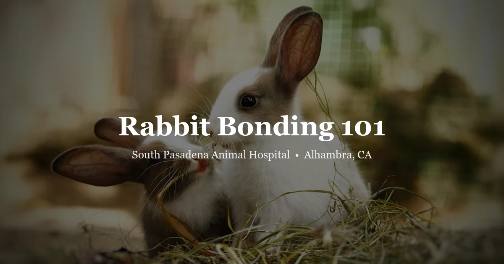

April 20, 2026 · 7 min read
Rabbit Bonding 101: How to Safely Introduce a Second Rabbit

Rabbits are highly social animals. In the wild, they live in warrens with complex social structures, and many pet rabbits — especially those housed alone — show signs of loneliness, boredom, or stress. Adding a second rabbit can dramatically improve your rabbit's quality of life. But put two unfamiliar rabbits together carelessly, and the result can be a serious fight. Successful bonding requires some preparation, the right setup, and a lot of patience. If you're looking for a rabbit vet in Alhambra to help you through the process, we're here for every step.
Step One: Spay or Neuter Both Rabbits First
This is non-negotiable for most bonding attempts. Unaltered rabbits — especially same-sex pairs — are driven by hormones to be territorial and aggressive. Even opposite-sex pairs kept intact will produce a litter. Spay and neuter also significantly reduce the risk of uterine cancer (very common in intact female rabbits over age 3) and testicular cancer, and tend to reduce territorial marking and aggressive behavior.
Wait 4–6 weeks after surgery before beginning bonding — hormones take time to clear the system fully. If you're adopting an already-altered rabbit, confirm the procedure was done at least a month prior.
Step Two: Choose a Neutral Space
Rabbits are territorial about their own living space. Putting a new rabbit into your resident rabbit's enclosure is almost guaranteed to cause a fight. The bonding area needs to be neutral — a room or space neither rabbit has lived in. Options include a bathroom neither rabbit has access to, a section of a room behind a temporary fence, or an outdoor pen on a non-familiar surface.
The space should be:
- Enclosed and escape-proof
- Small enough to prevent running away (a large space lets them avoid each other indefinitely)
- Free of hides or enclosed spaces where one rabbit can trap the other
- Easy to supervise — you need to be watching the whole time
Step Three: First Introductions
Keep first sessions short (10–15 minutes) and closely supervised. Have a towel or small piece of cardboard ready to separate them if needed — never use your bare hands to break up a fight.
What to watch for — GOOD signs:
- Mutual grooming (one rabbit grooming the other's head — this is the ultimate bonding sign)
- Lying close together or side by side
- Eating at the same time, side by side
- Ignoring each other (neutral is okay early on)
Signs that need monitoring but aren't necessarily dangerous:
- Chasing or circling (can be dominance behavior; watch for escalation)
- Mounting (dominance, not just sexual — either sex will mount the other; allow brief mounting, then redirect if it causes distress)
- One rabbit pressing its head flat to the ground — this is a “groom me” request and is a good sign
Signs to separate immediately:
- Biting — especially at the scruff, flanks, or genitals
- Loud, persistent boxing with front paws
- Thumping combined with aggressive lunging
- One rabbit pinned and screaming
Step Four: Gradual Progress
After successful short sessions, gradually increase the time. Once they're consistently calm and grooming has been observed, you can begin supervised cohabitation in a neutral enclosure. Only combine their living spaces once you're confident in the bond — this is usually after several weeks of successful bonding sessions.
Speed varies enormously: some rabbits bond within days; some take months. Don't rush it. A bond forced before the rabbits are ready often collapses later.
“Stress Bonding”: A Controversial Technique
Some rabbit owners use car rides, rocking on a dryer (with supervision and vibration only — no heat), or other mild stressors to encourage bonding under the idea that shared mild stress encourages mutual comfort-seeking. There is anecdotal support for this, and some shelters use it successfully. It should only be used by experienced rabbit owners who can read body language accurately, and it should never be used if either rabbit is already stressed, sick, or newly post-surgical.
What to Do If Bonding Isn’t Working
Some rabbits simply don't want a companion. This is uncommon but real. Signs that bonding isn't going to work: sustained aggression that doesn't decrease over many sessions, a rabbit that is clearly traumatized (not eating, hiding, thumping constantly) by the presence of the other, or escalating intensity of fights each session rather than decreasing.
In these cases, some owners successfully keep rabbits in side-by-side enclosures where they can see and smell each other without direct contact — this allows social stimulation without the risk of injury. A rabbit-experienced vet can help assess whether you have a true incompatibility.
The Vet Visit Before and After Bonding
Both rabbits should have a wellness exam before bonding to confirm they're healthy and confirm surgical status. Post-bonding, watch for any injuries — bite wounds on rabbits can become serious infections, particularly if they penetrate into muscle or around the eye. If any injuries occur during bonding, have them checked promptly. Our team offers thorough exotic wellness exams to get both rabbits cleared before you begin.
Frequently Asked Questions
Can I bond a male and female rabbit?
Yes — opposite-sex pairs often bond most easily. Both must be altered first. An unaltered male-female pair will produce a litter rapidly, so this step cannot be skipped.
My rabbit lived alone for 3 years. Will they accept a companion?
Possibly — older rabbits can bond successfully, though it may take longer. Some older rabbits genuinely prefer solitude. It's worth attempting carefully, with plenty of patience and short initial sessions.
How long does bonding take?
Anywhere from a few days to a few months. Rushing it is the most common mistake. Let the rabbits set the pace and look for consistent grooming behavior before moving to cohabitation.
Do both rabbits need to be the same breed?
No — breed is not a meaningful factor in bonding compatibility. Personality, hormonal status, and the introduction process matter far more than breed.
Should my rabbit be spayed/neutered before I get a second rabbit?
Yes — book that first. Get your rabbit spayed or neutered and wait the full 4–6 weeks before introducing a new companion. Call us at (626) 441-1314 to schedule.
Starting with the right foundation makes the whole process smoother. Schedule an exotic wellness exam to confirm surgical status and overall health before bonding begins, and don't hesitate to reach out if you run into trouble along the way. For more on keeping rabbits healthy, see our page on spay and neuter for rabbits.